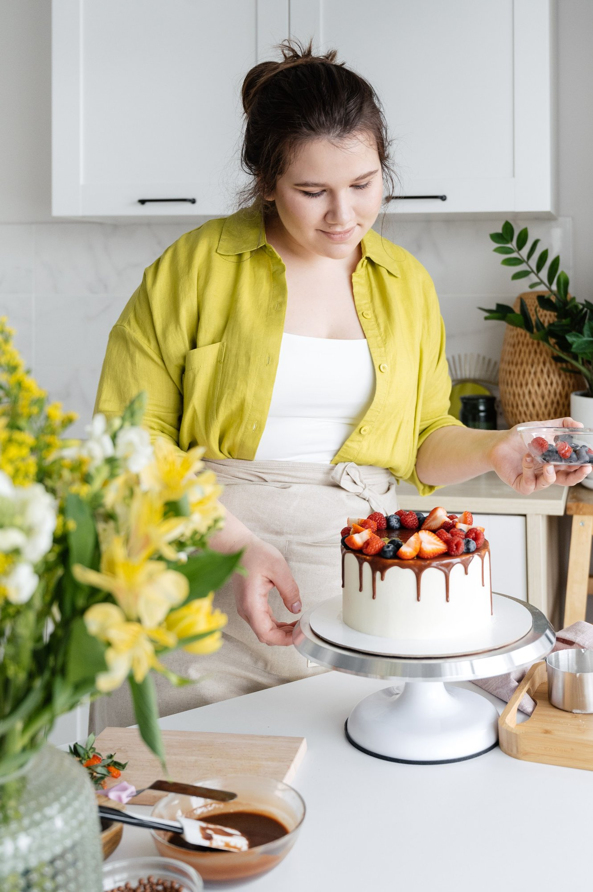

Dana & Jess
Two sisters and a lease on Kentucky Street.
First it was neighbors. Then neighbors of neighbors, then a Saturday where the porch ran out before nine. In 2021 Dana and her sister Jess opened the shop on Kentucky Street in downtown Petaluma — just the two of them, and one very early alarm.
Now there are five of us and two ovens. Two cafés in town open with our bread. The Saturday cinnamon rolls are gone by ten. And people say the sourdough is the best in Sonoma County, which we don’t know about, but we’ll take it.
Mostly it’s folks from Petaluma and Penngrove. Some drive up from Novato on Saturdays for the cinnamon rolls. We know most of them by name.
